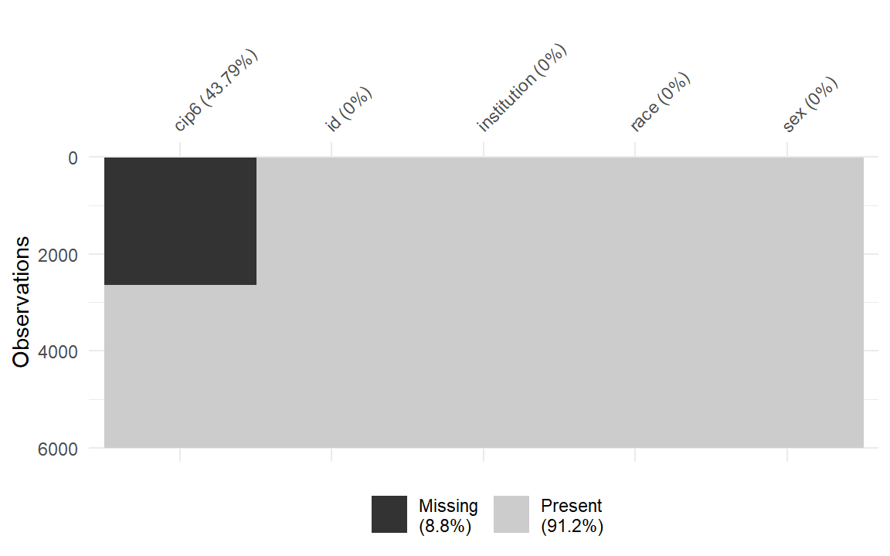
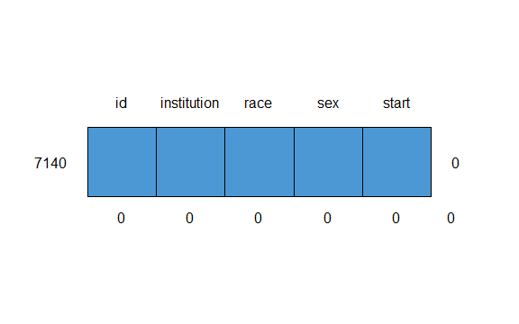

Packages used in this article:
library("dplyr") library("knitr") library("midfieldr") library("midfielddata") library("seplyr") library("stringr")
If you also wish to run the imputation, you will also require:
Some US institutions have first year engineering (FYE) programs—typically a common first year curriculum that is a prerequisite for declaring an engineering major. For these FYE students, some persistence metrics require us to predict their “starting major.”
Starting major: The degree-granting engineering program—Civil Engineering, Electrical Engineering, Mechanical Engineering, etc.—that we predict the student would have declared had they not been required to enroll in FYE.
Predicting the starting major of FYE students takes one of two forms.
In the first instance, we have students who complete an FYE and declare an engineering major. This is the easy case–at the student’s first opportunity, they enrolled in an engineering major of their choosing. We use that major as our predicted starting major.
In the second instance, we have students who, after FYE, do not declare an engineering major. This is the more complicated case—the data provide no information regarding what engineering major the student would have declared originally had the institution not required them to enroll in FYE. For these students, we treat the starting major as missing data and impute a predicted value.
Note that FYE students are neither undecided nor undeclared. Their institutions admitted them as engineering students. We just don’t know their preferred major. We have to predict the starting majors of FYE students to make fair comparisons across programs and institutions.
We impute these missing values using multiple imputation as implemented in the mice package (multivariate imputation via chained equations). The variables used to predict the missing values are institution, race, and sex.
The process is described in detail starting in the subsequent section. The process does take time—about 30 seconds for imputing the missing values in our FYE data with 5992 observations, 5 variables, and 5 imputations.
You can skip doing the imputation yourself if you wish. We’ve done it for you and saved the results. We provide a replacement data set cip_fye with the ID and predicted starting major of all FYE students in the midfieldr data sets.
We use these data in the package vignettes whenever an engineering starting major is required. You can do the same.
To access the case data, just load midfieldr and assign cip_fye to a variable. To distinguish the starting major from other 6-digit CIP codes used in this work, the imputed variable is start instead of cip6.
# if midfieldr is loaded, assign the bundled data set to a variable df <- cip_fye # examine the result glimpse(df) #> Rows: 5,992 #> Columns: 2 #> $ id <chr> "MID25877315", "MID25896490", "MID25916711", "MID25921297", "M... #> $ cip6 <chr> "140901", "141001", "141001", "140701", "140701", "141901", "1...
You may skip the rest of the vignette and simply incorporate the imputed data cip_fye in your analysis if the details of imputation are not important to you at this time.
If the details are of interest to you, we start by conditioning the data to prepare it for imputation.
Step 1. Extract from midfieldstudents the IDs of all students whose matriculation major is FYE.
fye_id <- midfieldstudents %>% filter(cip6 %in% c("14XXXX", "14YYYY")) %>% select(id) %>% unique() %>% glimpse() #> Rows: 5,992 #> Columns: 1 #> $ id <chr> "MID25783162", "MID25783166", "MID25783167", "MID25783178", "MID...
Extract from midfieldterms all the term data for these students. semi_join(x, y) returns all rows from x where there are matching values in y, keeping just columns from x.
all_fye_terms <- semi_join(midfieldterms, fye_id, by = "id") %>% select(id, cip6, term) %>% glimpse() #> Rows: 51,391 #> Columns: 3 #> $ id <chr> "MID25783162", "MID25783162", "MID25783162", "MID25783162", "M... #> $ cip6 <chr> "14XXXX", "14XXXX", "520301", "520301", "520301", "520301", "5... #> $ term <dbl> 19921, 19923, 19931, 19933, 19941, 19943, 19951, 19953, 19961,...
Step 2. Subset the students who declare an engineering major after FYE.
Keeping those terms in which FYE is the declared major, we arrange the rows by ID and descending term. Then, grouped by ID, each first row is a student’s final FYE term, denoted end_fye.
last_fye_terms <- all_fye_terms %>% filter(cip6 %in% c("14XXXX", "14YYYY")) %>% arrange(id, desc(term)) %>% group_by(id) %>% filter(row_number() == 1) %>% ungroup() %>% select(id, end_fye = term) %>% glimpse() #> Rows: 5,220 #> Columns: 2 #> $ id <chr> "MID25783162", "MID25783166", "MID25783167", "MID25783178",... #> $ end_fye <dbl> 19923, 20093, 20053, 19961, 19873, 20063, 20053, 20063, 198...
We join the column end_fye to the all_fye_terms data frame. left_join(x, y) returns all rows from x, and all columns from x and y. All multiple matches between x and y are returned.
fye_to_engr <- left_join(all_fye_terms, last_fye_terms, by = "id")
Arranging by ID and ascending term and grouped by ID, each first row is a student’s first term after FYE.
fye_to_engr <- fye_to_engr %>% filter(term > end_fye) %>% arrange(id, term) %>% group_by(id) %>% filter(row_number() == 1) %>% ungroup()
Because this data frame denotes students transitioning to an engineering major, we filter to keep only those whose CIP starts with “14.” For these students, the predicted starting major is their declared engineering major after FYE.
fye_to_engr <- fye_to_engr %>% filter(str_detect(cip6, "^14")) %>% select(id, cip6) %>% glimpse() #> Rows: 3,368 #> Columns: 2 #> $ id <chr> "MID25783167", "MID25783178", "MID25783197", "MID25783199", "M... #> $ cip6 <chr> "140901", "140701", "140701", "140301", "140701", "140501", "1...
Step 3. The remaining FYE students have an unknown starting major.
Starting with the IDs of all students in FYE and removing the IDs of students who have declared an engineering major after FYE yields the IDs of students whose starting major will have to be imputed. anti_join(x, y) returns all rows from x where there are not matching values in y, keeping just columns from x.
For these students, the predicted starting major after FYE is assumed missing (NA).
fye_to_nonengr <- anti_join(fye_id, fye_to_engr, by = "id") %>% mutate(cip6 = NA_character_) %>% glimpse() #> Rows: 2,624 #> Columns: 2 #> $ id <chr> "MID25783162", "MID25783166", "MID25783227", "MID25783428", "M... #> $ cip6 <chr> NA, NA, NA, NA, NA, NA, NA, NA, NA, NA, NA, NA, NA, NA, NA, NA...
Step 4. Combine the two data frames and finish the data preparation.
Bind the two data frames.
fye_start <- bind_rows(fye_to_engr, fye_to_nonengr) %>% glimpse() #> Rows: 5,992 #> Columns: 2 #> $ id <chr> "MID25783167", "MID25783178", "MID25783197", "MID25783199", "M... #> $ cip6 <chr> "140901", "140701", "140701", "140301", "140701", "140501", "1...
Extract from midfieldstudents the institution names by student ID. semi_join(x, y) returns all rows from x where there are matching values in y, keeping just columns from x.
inst_id <- semi_join(midfieldstudents, fye_start, by = "id") %>% select(id, institution) %>% unique() %>% glimpse() #> Rows: 5,992 #> Columns: 2 #> $ id <chr> "MID25783162", "MID25783166", "MID25783167", "MID257831... #> $ institution <chr> "Institution M", "Institution M", "Institution M", "Ins...
Join the institutions to the FYE starters data frame and add race and sex using race_sex_join(). We assume that these variables are appropriate predictors.
fye_start <- left_join(fye_start, inst_id, by = "id") %>% race_sex_join() %>% select(id, institution, race, sex, cip6) %>% unique() %>% glimpse() #> Rows: 5,992 #> Columns: 5 #> $ id <chr> "MID25783167", "MID25783178", "MID25783197", "MID257831... #> $ institution <chr> "Institution M", "Institution M", "Institution M", "Ins... #> $ race <chr> "White", "Black", "White", "White", "White", "White", "... #> $ sex <chr> "Male", "Male", "Male", "Female", "Male", "Male", "Male... #> $ cip6 <chr> "140901", "140701", "140701", "140301", "140701", "1405...
Convert the character variables to factors to use with mice. The resulting data frame mi_input is ready to be operated on by mice.
mi_input <- fye_start %>% arrange(institution, race, sex, cip6) %>% mutate( institution = as.factor(institution), race = as.factor(race), sex = as.factor(sex), cip6 = as.factor(cip6) ) %>% glimpse() #> Rows: 5,992 #> Columns: 5 #> $ id <chr> "MID25877315", "MID25896490", "MID25916711", "MID259212... #> $ institution <fct> Institution B, Institution B, Institution B, Institutio... #> $ race <fct> Asian, Asian, Asian, Asian, Asian, Asian, Asian, Asian,... #> $ sex <fct> Female, Female, Female, Female, Female, Female, Male, M... #> $ cip6 <fct> NA, NA, NA, NA, NA, NA, NA, NA, NA, NA, NA, NA, NA, NA,...
The mice package (van Buuren and Groothuis-Oudshoorn 2011) implements multivariate imputation by chained equations (MICE). MICE is also known as “fully conditional specification” or “sequential regression multiple imputation” and is suitable for categorical variables such as ours (Azur et al. 2011). Our computational procedure follows the approach suggested by Dhana (2017).
The procedure assumes the missing data are “missing at random” (MAR), that is, independent of the variables used to impute the missing values. This is the rationale for using data only from FYE institutions to impute the missing values—the existence if the missing data does depend on the institution type, FYE or non-FYE. Within the FYE data itself, however, we assume that the imputed starting majors are missing at random.
Use visdat::vis_miss() to see the pattern of missing data. As expected, all the missing values are in the start column.
vis_miss(mi_input, cluster = TRUE, sort_miss = TRUE)

Initialize parameters.
init <- mice(mi_input, maxit = 0) meth <- init$method predM <- init$predictorMatrix
Identify variables not used as predictors.
predM[, c("id")] <- 0
Assign variables not imputed. (In this case, this step could be skipped because a mice default is to not impute variables with zero missing values.)
meth[c("id", "institution", "race", "sex")] <- ""
Assign the imputation method. For unordered categorical data with more than two levels, the suggested method is “polyreg” (polytomous regression).
meth[c("cip6")] <- "polyreg"
Run the multiple (m = 5) imputations. The seed is set for reproducible results. On my Windows machine, this imputation takes about 30 seconds.
mi_output <- mice( mi_input, method = meth, predictorMatrix = predM, m = 5, printFlag = TRUE, seed = 20180624 )
cip_fye
Construct the data set after imputation, keeping ID and starting major only. Reformat the start major as a character. The data frame, cip_fye, is the data mentioned previously provided with the midfieldr package if you prefer not to do your own imputation.
cip_fye <- mice::complete(mi_output) %>% select(id, cip6) %>% mutate(cip6 = as.character(cip6)) %>% unique() %>% glimpse() #> Rows: 5,992 #> Columns: 2 #> $ id <chr> "MID25877315", "MID25896490", "MID25916711", "MID25921297", "M... #> $ cip6 <chr> "140901", "141001", "141001", "140701", "140701", "141901", "1...
Total number of FYE students in midfieldstudents is 5992.
Confirm there are no missing values using vis_dat::vis_dat(). The result shows that all variables are characters and there are no missing values.
vis_dat(cip_fye, palette = "cb_safe")

Examine to what majors and in what numbers the FYE students were assigned.
cip_fye %>% group_summarise(., "cip6", N = n()) %>% arrange(desc(N)) %>% left_join(., cip, by = "cip6") %>% select(cip4, cip4name, N) %>% kable()
| cip4 | cip4name | N |
|---|---|---|
| 1419 | Mechanical Engineering | 1565 |
| 1408 | Civil Engineering | 895 |
| 1410 | Electrical, Electronics and Communications Engineering | 811 |
| 1409 | Computer Engineering, General | 617 |
| 1435 | Industrial Engineering | 572 |
| 1407 | Chemical Engineering | 474 |
| 1402 | Aerospace, Aeronautical and Astronautical Engineering | 455 |
| 1403 | Agricultural, Biological Engineering and Bioengineering | 128 |
| 1406 | Ceramic Sciences and Engineering | 100 |
| 1421 | Mining and Mineral Engineering | 98 |
| 1411 | Engineering Mechanics | 97 |
| 1418 | Materials Engineering | 82 |
| 1405 | Biomedical, Medical Engineering | 75 |
| 1428 | Textile Sciences and Engineering | 9 |
| 1423 | Nuclear Engineering | 7 |
| 1433 | Construction Engineering | 5 |
| 1499 | Engineering, Other | 2 |
Azur, Melissa J., Elizabeth A. Stuart, Constantine Frangakis, and Philip J. Leaf. 2011. “Multiple Imputation by Chained Equations: What Is It and How Does It Work?” International Journal of Methods in Psychiatric Research 20 (1): 40–49.
Dhana, Klodian. 2017. “Handling Missing Data with MICE Package: A Simple Approach.” Edited by Data Science Plus. https://datascienceplus.com/handling-missing-data-with-mice-package-a-simple-approach/.
van Buuren, Stef, and Karin Groothuis-Oudshoorn. 2011. “mice: Multivariate Imputation by Chained Equations in R.” Journal of Statistical Software 45 (3): 1–67. https://www.jstatsoft.org/v45/i03/.